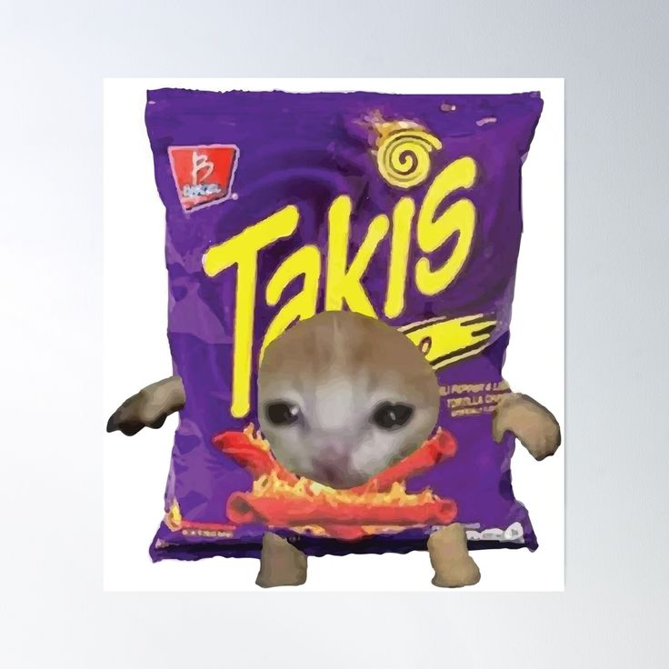

// THIS IS A TEST // Hi! I'm Lorena! :)
São Paulo, Brazil
High school student - Programming [C++, Py, HTML]


00:00
> Horário de Brasília (BRT)

// THIS IS A TEST // Hi! I'm Lorena! :)
São Paulo, Brazil
High school student - Programming [C++, Py, HTML]
Em breve...
Project description
description

I'm Not Them
Them & I
Em breve...